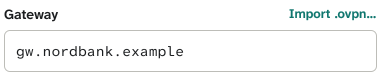
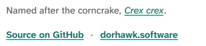

You noticed (2026-10-19) that “Copy”, “Show”, “Change…” and “Keep the old key” in the IPsec proposal
are teal, though DESIGN.md keeps teal for three things: a decision Crake made, the on or chosen state, and
the one primary action. They copied what parts of the app already do. The app already has three other looks for
actions: the bordered button (Edit, Remove…, Undo, the panel's footer), its small form (the panel's
“Dismiss”), and ink, underlined text (Settings → Diagnostics' “Open” and “Show in folder”). This settles one
look for the small ones, everywhere. One choice for you (2). You liked B; the two assessments recommend A. Both
are drawn here as the app would build them.
1 · Where teal text is an action today
Where
What
Size today
Kind
New tunnel: Gateway's label row, and the OpenVPN card's Profile row
Import .ovpn…
13 px
an action
Tunnel detail: Profile's label row
Edit…
12 px
an action
The sign-in window, when it can't connect
Copy for helpdesk
13 px
an action (it copies, and says nothing)
The panel's new-version notice
Restart, Download
13 px
a notice's action: DESIGN.md says notices use a bordered one
Settings → About
Crex crex, Source on GitHub, dorhawk.software
14 px
links to the web
A host's whole name (tunnel detail, Traffic)
Copied
12 px
an acknowledgement: DESIGN.md says teal is never one
The IPsec proposal
Show, Change…, Keep the old key, Use it again
13 px
actions
Teal stays where DESIGN.md puts it: Traffic's ticks and the bird's call marks
(decisions, the brand), “Recommended”, the chosen rows and the switches that are on (the chosen state), Continue (the
primary action). Whatever you choose, the approved screens that draw teal actions (sign-in.html, settings.html) change
with the app.
2 · Your choice
Today
AInk, underlined
BSmall bordered buttons
CTeal, written into the rule
A label row's actionImport .ovpn…, Edit…, Show, Change…

Gateway's keyShow
••••••••••
As Diagnostics' Open: ink, a full ink underline. Pointed at, the hand.
Gateway's keyShow
••••••••••
As the panel's Dismiss: 20 px tall, so the label row keeps its 20 px. Pointed at, its border darkens.
Gateway's keyShow
••••••••••
Beside a sentence it acts onthe sign-in window's Copy for helpdesk
openconnect said: Server certificate verify failed
Copy for helpdesk
CloseTry again
Two teal things in one window, as sign-in.html draws it.
openconnect said: Server certificate verify failed
Copy for helpdesk
CloseTry again
openconnect said: Server certificate verify failed
Copy for helpdesk
CloseTry again
openconnect said: Server certificate verify failed
Copy for helpdesk
CloseTry again
A result's actionsSettings → Diagnostics, after saving a report
Saved crake-report.txt in Documents.
OpenShow in folder
Today: ink, underlined (A's look, built and approved), in its grey box.
Saved crake-report.txt in Documents.
OpenShow in folder
Unchanged.
Saved crake-report.txt in Documents.
OpenShow in folder
They become buttons too; on a grey box the button takes the panel's colour (as the staying notice's does), or it vanishes.
Saved crake-report.txt in Documents.
OpenShow in folder
They become teal.
Links to the webSettings → About

The two lines with links, cut from the window.
Named after the corncrake, Crex crex.
Source on GitHub·dorhawk.software
Named after the corncrake, Crex crex.
Source on GitHubdorhawk.software
A link inside a sentence stays underlined text, as in any document.
Named after the corncrake, Crex crex.
Source on GitHub·dorhawk.software
The same in every optionnot part of the choice
A command line's Copy: the leftover notice's, as built
A notice's actions: a bordered one and a muted “Not now”
Crake was updated to 0.12.0. Restart it to finish.
RestartNot now
An acknowledgement: muted, with the app's check
git.acme.internalCopied
The sign-in window's step under way: its dots in ink, not teal (DESIGN.md: something under way is ink).
And Copy for helpdesk says Copied for 3 s after it, as the leftover notice does.
“Not now” stays muted and plain on purpose: a dismissal, quieter than the action beside it. Keyboard focus keeps
DESIGN.md's 2 px accent ring in every option: a passing state, not a second teal thing; an underlined action gets 2 px of
room inside it (taken back outside), so the ring clears its letters and nothing moves.
AAn action reads as one by its underline, in the
text's own colour, as Diagnostics' Open already does and as a link in a document does. Nothing in a row changes size
(all at 13 px: tunnel detail's Edit… comes up from 12), and the only teal you click is the primary action. On a screen share it reads at once (the underline is ink, 17:1),
but beside an ink label of the same weight it's quieter than B.
BEvery action looks like a button, the way Dismiss, Edit and Undo
already do, so nobody wonders what's clickable, and Diagnostics' Open and Show in folder become buttons too. The
small button keeps a label row at its 20 px, at 12 px text (Import .ovpn… and Show come down from 13). Two looks
remain: the button, and underlined text for a link inside a sentence (“Crex crex”), where A has one look for both.
A window with several buttons reads a little busier, and the button's hairline is light (the line token, as Dismiss
has it), so it's the fill that says “button”, which in dark is faint (surface on panel).
CNothing moves, and the rule gets a fourth use: teal then means
“something you can click” as well as “Crake decided”, the drift the audit of 2026-10-17 cleared out of Traffic.